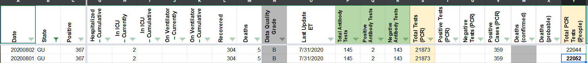
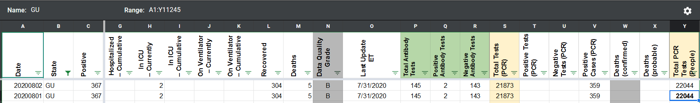

[GU] Patch Total PCR Tests (People) for 8/1
Issue number 725
ladyzhetse opened this issue on August 3, 2020 at 6:50 am
Labels Data quality not stale
State or US: Guam
Describe the problem During pub shift on 8/2, we realized that the “Total PCR Tests (People)” figure had been incorrectly calculated the previous day, 8/1. It should be 22,044 (359+21685), not 22,052 (367+21685).
Link to data source 359 = PCR confirmed cases (356 from dashboard + 3 from 8/1 press release); 21685 = negative cases (from press release) https://ghs.guam.gov/jic-release-no-245-cumulative-results-three-test-positive-covid-19-dphss-tests-doc-employees-new https://covid-tracking.slack.com/archives/CUQ4MMTPD/p1596401618039500
Fixing according to the JIC release number 245 linked above BEFORE:  AFTER: 